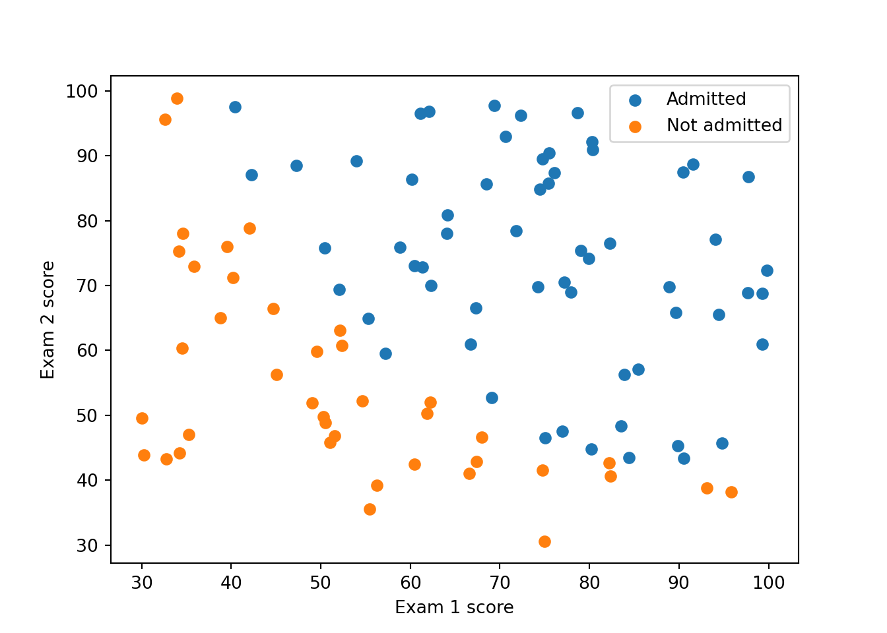
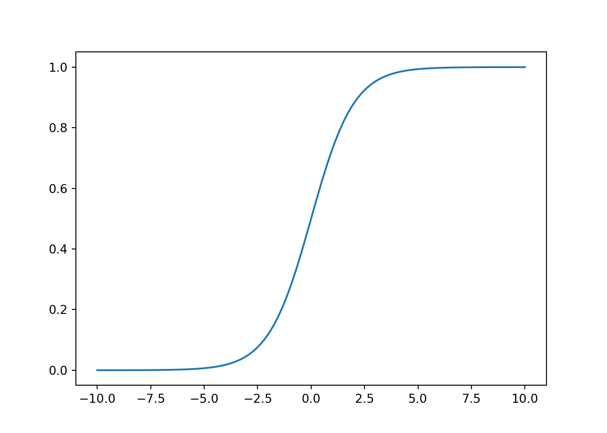
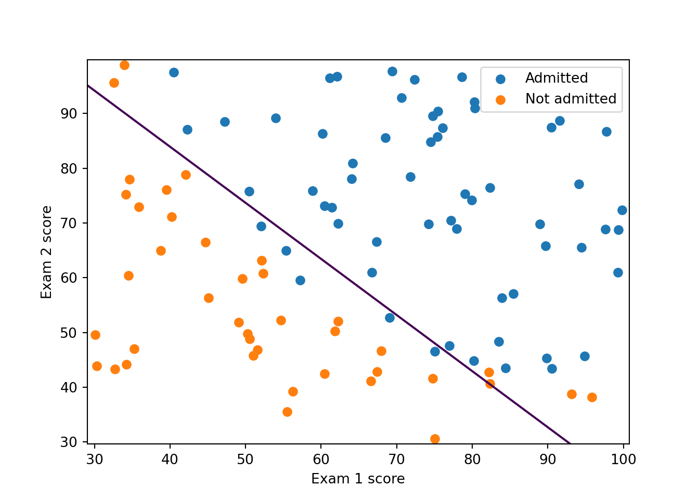
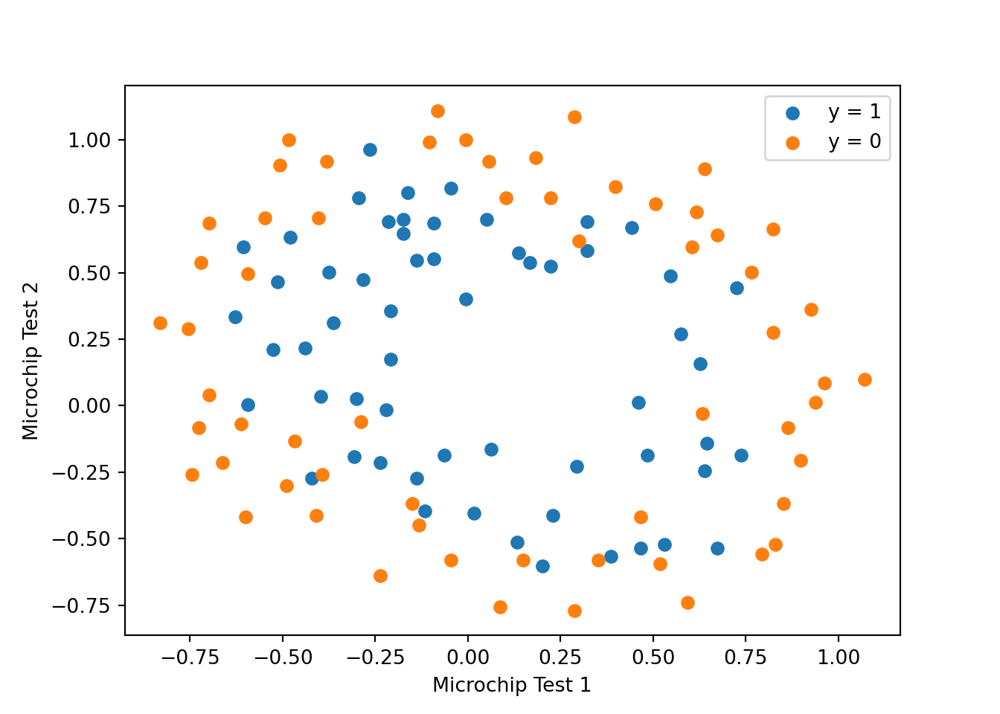
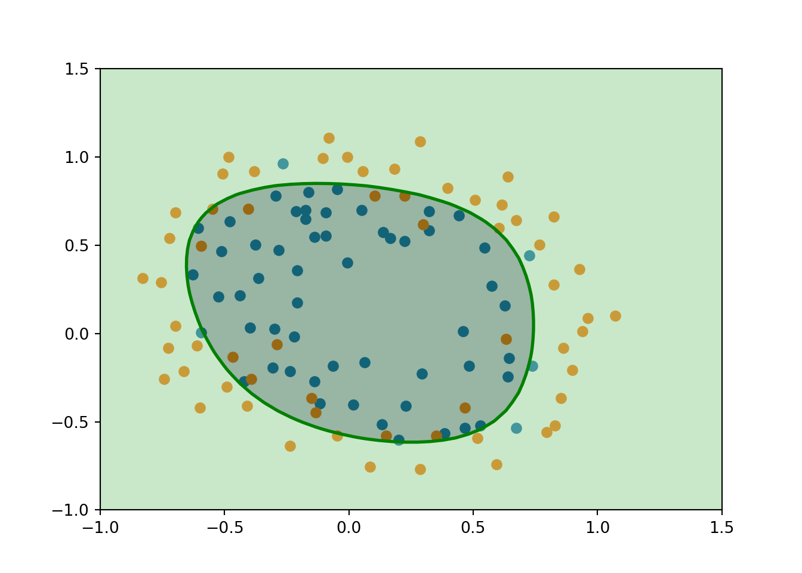

# Scientific and vector computation for python
import numpy as np
# Plotting library
import matplotlib.pyplot as plt
# Optimization module in scipy
from scipy import optimize
# do not forget to tell matplotlib to embed plots within the notebook
%matplotlib inlineLab2: Logistic Regression & Regularization
Introduction
In this lab, you will implement logistic regression and apply it to two different datasets.
Before we begin with the exercises, we need to import all libraries required for this programming exercise. Throughout the course, we will be using numpy for all arrays and matrix operations, and matplotlib for plotting. In this assignment, we will also use scipy, which contains scientific and numerical computation functions and tools.
Logistic Regression
In this part of the exercise, you will build a logistic regression model to predict whether a student gets admitted into a university. Suppose that you are the administrator of a university department and you want to determine each applicant’s chance of admission based on their results on two exams. You have historical data from previous applicants that you can use as a training set for logistic regression. For each training example, you have the applicant’s scores on two exams and the admissions decision.
Your task is to build a classification model that estimates an applicant’s probability of admission based the scores from those two exams.
1. Load the data tp2data1.txt from here using the loadtxt() from numpy. The first two columns contains the exam scores and the third column contains the label. Then separate the features from label. Name the feature matrix X and the label y.
2. Print the first 5 samples from X and y.
Visualizing the data
3. Display the data on a 2-dimensional plot where the axes are the two exam scores, and the positive and negative examples are shown with different colors (or markers).
You should produce something like this:

Implementation
Sigmoid function
Recall that the logistic regression hypothesis is defined as:
\[ h_\omega(x) = g(\omega^T x)\]
where function \(g\) is the sigmoid function. The sigmoid function is defined as:
\[g(z) = \frac{1}{1+e^{-z}}\]
4. Implement the sigmoid function so it can be called by the rest of your program. When you are finished, try testing a few values by calling sigmoid(x) in a new cell. For large positive values of x, the sigmoid should be close to 1, while for large negative values, the sigmoid should be close to 0. Evaluating sigmoid(0) should give you exactly 0.5. Your code should also work with vectors and matrices. For a matrix, your function should perform the sigmoid function on every element.
5. Plot the sigmoid function, like this:

Cost function and gradient
6. Before proceeding, add the intercept term to X. (hint: you can use np.concatenate or np.hstack)
7. Implement the cost function and its gradient for logistic regression.
Recall that the cost function for logistic regression is
\[ J(\omega) = \frac{1}{m} \sum_{i=1}^{m} \left[ -y^{(i)} \log\left(h_\omega\left( x^{(i)} \right) \right) - \left( 1 - y^{(i)}\right) \log \left( 1 - h_\omega\left( x^{(i)} \right) \right) \right]\]
Recall that the gradient of the cost is a vector of the same length as \(\omega\) where the \(j^{th}\) element (for \(j = 0, 1, \cdots , n\)) is defined as follows:
\[ \frac{\partial J(\omega)}{\partial \omega_j} = \frac{1}{m} \sum_{i=1}^m \left( h_\omega \left( x^{(i)} \right) - y^{(i)} \right) x_j^{(i)} \]
8. Call your implemented function using two test cases for \(\omega\). You should see that the cost is about 0.693 for \(\omega = (0,0,0)\).
Learning the parameters
Learning parameters using your implemented Gradient Descent
9. Implement the gradient descent algorithm for logistic regression: write a cost function and calculate its gradient, then take a gradient descent step accordingly in order to find the optimal parameters. Run it on the training set. Print the results (the parameters values and the cost function).
Learning parameters using scipy.optimize
In this part you will use the scipy.optimize module. SciPy is a numerical computing library for python. It provides an optimization module for root finding and minimization. As of scipy 1.0, the function scipy.optimize.minimize is the method to use for optimization problems(both constrained and unconstrained).
For logistic regression, you want to optimize the cost function \(J(\omega)\) with parameters \(\omega\). Concretely, you are going to use optimize.minimize to find the best parameters \(\omega\) for the logistic regression cost function, given a fixed dataset (of X and y values). You will pass to optimize.minimize the following inputs:
-
costFunction: A cost function that, when given the training set and a particular \(\omega\), computes the logistic regression cost and gradient with respect to \(\omega\) for the dataset (X, y). It is important to note that we only pass the name of the function without the parenthesis. This indicates that we are only providing a reference to this function, and not evaluating the result from this function. -
initial_omega: The initial values of the parameters we are trying to optimize. -
(X, y): These are additional arguments to the cost function. -
jac: Indication if the cost function returns the Jacobian (gradient) along with cost value. (True) -
method: Optimization method/algorithm to use -
options: Additional options which might be specific to the specific optimization method. In the following, we only tell the algorithm the maximum number of iterations before it terminates.
If you have calculated the cost function correctly, optimize.minimize will converge on the right optimization parameters and return the final values of the cost and \(\omega\) in a class object. Notice that by using optimize.minimize, you did not have to write any loops yourself, or set a learning rate like you did for gradient descent. This is all done by optimize.minimize: you only needed to provide a function calculating the cost and the gradient.
In the following, a code written to call optimize.minimize with the correct arguments.
# set options for optimize.minimize
options= {'maxiter': 400}
# see documention for scipy's optimize.minimize for description about
# the different parameters
# The function returns an object `OptimizeResult`
# We use truncated Newton algorithm for optimization which is
# equivalent to MATLAB's fminunc
# See https://stackoverflow.com/questions/18801002/fminunc-alternate-in-numpy
# initial_omega = np.array([0, 0, 0])
res = optimize.minimize(costFunction,
initial_omega,
(X_train, y),
jac=True,
method='TNC',
options=options)
# the fun property of `OptimizeResult` object returns
# the value of costFunction at optimized omega
cost = res.fun
# the optimized omega is in the x property
omega = res.x
# Print omega to screen
print('Cost at omega found by optimize.minimize: {:.3f}'.format(cost))
print('Expected cost (approx): 0.203\n');
print('omega:')
print('\t[{:.3f}, {:.3f}, {:.3f}]'.format(*omega))
print('Expected omega (approx):\n\t[-25.161, 0.206, 0.201]')10. Run the code above on your cost function and verify that you obtain the correct (or almost) values.
Plotting the decision boundary
Since the decision boundary of logistic regression is a linear (you know that right?) and the dimension of the feature space here is 2, the decision boundary in this 2-dimensional space is a line that separates the predicted classes “0” and “1”.
For logistic regression, we predict \(y=1\) if \(\omega^T X \geq 0\) (right side of the line) and \(y=0\) if \(\omega^T X \lt 0\) (left side of the line). Where
\[ \omega = \begin{pmatrix} \omega_0 \\ \omega_1 \\ \omega2 \end{pmatrix} \,\, \text{and} \,\, X = \begin{pmatrix} 1 \\ X_1 \\ X_2 \end{pmatrix} \]
So we predict \(y=1\) if \(\omega_0 + \omega_1 X_1 + \omega_2 X_2 \geq 0\) which means that the equation of the decision boundary (a line here) is \(X_2 = - \frac{\omega_1}{\omega_2}X_1 - \frac{\omega_0}{\omega_2}\)
11. Plot the decision boundary obtained with logistic regression.
Evaluating logistic regression
12. After learning the parameters, you can use the model to predict whether a particular student will be admitted. For a student with an Exam 1 score of 45 and an Exam 2 score of 85, you should expect to see an admission probability of 0.776. Another way to evaluate the quality of the parameters we have found is to see how well the learned model predicts on our training set. Write a function predict that will produce “1” or “0” predictions given a dataset and a learned parameter vector \(\omega\).
13. Calculate the confusion matrix, and use it to calculate the training accuracy of your classifier and the F1 score.
14. In order to verify that your line (decision boundary) is well plotted, color the points on the last Figure with respect to the predicted response.
15. Now make the same plot but color the points with respect to their real labels. From this figure, count the number of the false positive predictions.
plotDecisionBoundary function
For the rest, use the following function (or modify it to adapt it) for plotting the decision boundary.
def plotDecisionBoundary(omega, X, y):
x_min, x_max = X[:, 0].min() - 1, X[:, 0].max() + 1
y_min, y_max = X[:, 1].min() - 1, X[:, 1].max() + 1
xx, yy = np.meshgrid(np.arange(x_min, x_max, 0.1),
np.arange(y_min, y_max, 0.1))
X_plot = np.c_[xx.ravel(), yy.ravel()]
X_plot = np.hstack((np.ones((X_plot.shape[0], 1)), X_plot))
y_plot = np.dot(X_plot, omega).reshape(xx.shape)
plt.figure()
plt.scatter(X[y == 1][:, 0], X[y == 1][:, 1], label="Admitted")
plt.scatter(X[y == 0][:, 0], X[y == 0][:, 1], label="Not admitted")
plt.contour(xx, yy, y_plot, levels=[0])
plt.xlabel("Exam 1 score")
plt.ylabel("Exam 2 score")
plt.legend()
plt.show()plotDecisionBoundary(res.x, X, y)0.20365864300942144[-24.13930679 0.19805053 0.19320881]
Regularized logistic regression
In this part of the exercise, you will implement regularized logistic regression to predict whether microchips from a fabrication plant passes quality assurance (QA). During QA, each microchip goes through various tests to ensure it is functioning correctly.
Suppose you are the product manager of the factory and you have the test results for some microchips on two different tests. From these two tests, you would like to determine whether the microchips should be accepted or rejected. To help you make the decision, you have a dataset of test results on past microchips, from which you can build a logistic regression model.
2.1. Load the data in file tp2data2.txt from from here . Separate the features from the labels in two differents objects.
2.2. Visualize the data in a 2-dimensional plot. Color the point with respect to their labels. What do you notice ?

Feature mapping
One way to fit the data better is to create more features from each data point. In the function mapFeature defined below, we will map the features into all polynomial terms of \(x_1\) and \(x_2\) up to the sixth power.
\[\text{mapFeature}(x) = \begin{bmatrix} 1 & x_1 & x_2 & x_1^2 & x_1 x_2 & x_2^2 & x_1^3 & \dots & x_1 x_2^5 & x_2^6 \end{bmatrix}^T\]
def mapFeature(X1, X2, degree=6):
"""
Maps the two input features to quadratic features used in the regularization exercise.
Returns a new feature array with more features, comprising of
X1, X2, X1.^2, X2.^2, X1*X2, X1*X2.^2, etc..
Parameters
----------
X1 : array_like
A vector of shape (m, 1), containing one feature for all examples.
X2 : array_like
A vector of shape (m, 1), containing a second feature for all examples.
Inputs X1, X2 must be the same size.
degree: int, optional
The polynomial degree.
Returns
-------
: array_like
A matrix of of m rows, and columns depend on the degree of polynomial.
"""
if X1.ndim > 0:
out = [np.ones(X1.shape[0])]
else:
out = [np.ones(1)]
for i in range(1, degree + 1):
for j in range(i + 1):
out.append((X1 ** (i - j)) * (X2 ** j))
if X1.ndim > 0:
return np.stack(out, axis=1)
else:
return np.array(out)As a result of this mapping, our vector of two features (the scores on two QA tests) has been transformed into a 28-dimensional vector. A logistic regression classifier trained on this higher-dimension feature vector will have a more complex decision boundary and will appear nonlinear when drawn in our 2-dimensional plot.
While the feature mapping allows us to build a more expressive classifier, it also more susceptible to overfitting.
In the next parts of the exercise, you will implement regularized logistic regression to fit the data and also see for yourself how regularization can help combat the overfitting problem.
2.3. Apply the mapFeature() function on the dataset. Verify that you get a 28-dimensional vector.
Cost function and gradient
Recall that the regularized cost function in logistic regression is
\[ J(\omega) = \frac{1}{m} \sum_{i=1}^m \left[ -y^{(i)}\log \left( h_\omega \left(x^{(i)} \right) \right) - \left( 1 - y^{(i)} \right) \log \left( 1 - h_\omega \left( x^{(i)} \right) \right) \right] + \frac{\lambda}{2m} \sum_{j=1}^n \omega_j^2 \]
Note that we do not regularize the parameters \(\omega_0\). The gradient of the cost function is a vector where the \(j^{th}\) element is defined as follows:
\[ \frac{\partial J(\omega)}{\partial \omega_0} = \frac{1}{m} \sum_{i=1}^m \left( h_\omega \left(x^{(i)}\right) - y^{(i)} \right) x_j^{(i)} \qquad \text{for } j =0 \]
\[ \frac{\partial J(\omega)}{\partial \omega_j} = \left( \frac{1}{m} \sum_{i=1}^m \left( h_\omega \left(x^{(i)}\right) - y^{(i)} \right) x_j^{(i)} \right) + \frac{\lambda}{m}\omega_j \qquad \text{for } j \ge 1 \]
2.4. Complete the function costFunctionReg() below. This function computes and returns the cost function and gradient for regularized logistic regression.
def costFunctionReg(omega, X, y, lambda_):
"""
Compute cost and gradient for logistic regression with regularization.
Parameters
----------
omega : array_like
Logistic regression parameters. A vector with shape (n, ). n is
the number of features including any intercept. If we have mapped
our initial features into polynomial features, then n is the total
number of polynomial features.
X : array_like
The data set with shape (m x n). m is the number of examples, and
n is the number of features (after feature mapping).
y : array_like
The data labels. A vector with shape (m, ).
lambda_ : float
The regularization parameter.
Returns
-------
J : float
The computed value for the regularized cost function.
grad : array_like
A vector of shape (n, ) which is the gradient of the cost
function with respect to omega, at the current values of omega.
Instructions
------------
Compute the cost `J` of a particular choice of omega.
Compute the partial derivatives and set `grad` to the partial
derivatives of the cost w.r.t. each parameter in omega.
"""
# Initialize some useful values
m = y.size # number of training examples
# You need to return the following variables correctly
J = 0
grad = np.zeros(omega.shape)
# ===================== YOUR CODE HERE ======================
# =============================================================
return J, grad2.5. Once you are done with the costFunctionReg, call it using the initial value of \(\omega\) (initialized to all zeros), and also another test case where \(\omega\) is all ones. The code is given below with the expected values. You should obtain the same values.
# Initialize fitting parameters
# X here has 28 columns
initial_omega = np.zeros(X.shape[1])
# Set regularization parameter lambda to 1
# DO NOT use `lambda` as a variable name in python
# because it is a python keyword
lambda_ = 1
# Compute and display initial cost and gradient for regularized logistic
# regression
cost, grad = costFunctionReg(initial_omega, X, y, lambda_)
print('Cost at initial omega (zeros): {:.3f}'.format(cost))
print('Expected cost (approx) : 0.693\n')
print('Gradient at initial omega (zeros) - first five values only:')
print('\t[{:.4f}, {:.4f}, {:.4f}, {:.4f}, {:.4f}]'.format(*grad[:5]))
print('Expected gradients (approx) - first five values only:')
print('\t[0.0085, 0.0188, 0.0001, 0.0503, 0.0115]\n')
# Compute and display cost and gradient
# with all-ones omega and lambda = 10
test_omega = np.ones(X.shape[1])
cost, grad = costFunctionReg(test_omega, X, y, 10)
print('------------------------------\n')
print('Cost at test omega : {:.2f}'.format(cost))
print('Expected cost (approx): 3.16\n')
print('Gradient at test omega - first five values only:')
print('\t[{:.4f}, {:.4f}, {:.4f}, {:.4f}, {:.4f}]'.format(*grad[:5]))
print('Expected gradients (approx) - first five values only:')
print('\t[0.3460, 0.1614, 0.1948, 0.2269, 0.0922]')Learning parameters using scipy.optimize.minimize
2.6. Use optimize.minimize to learn the optimal parameters \(\omega\).
Plotting the decision boundary
2.7. To visualize the model learned by this classifier use the function plotDecisionBoundary to plot the (non-linear) decision boundary that separates the positive and negative examples.
In plotDecisionBoundary, we plot the non-linear decision boundary by computing the classifier’s predictions on an evenly spaced grid and then and draw a contour plot where the predictions change from y = 0 to y = 1.
You should obtain something like this:
<string>:37: VisibleDeprecationWarning: Creating an ndarray from ragged nested sequences (which is a list-or-tuple of lists-or-tuples-or ndarrays with different lengths or shapes) is deprecated. If you meant to do this, you must specify 'dtype=object' when creating the ndarray.
Extra
Try out different regularization parameters for the dataset to understand how regularization prevents overfitting.
Notice the changes in the decision boundary as you vary \(\lambda\). With a small \(\lambda\), you should find that the classifier gets almost every training example correct, but draws a very complicated boundary, thus overfitting the data.
Credits
This lab is hugely inspired from Andrew Ng’s Machine Learning course. Supplementary material from dibgerge’s github was used.